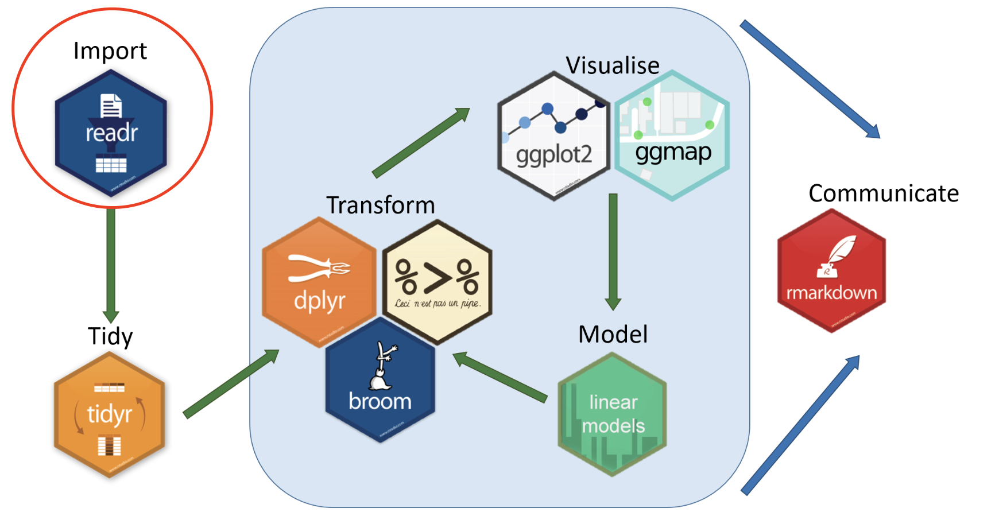
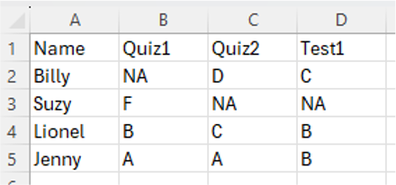

Collecting and Cleaning Survey Data
Before we jump into cleaning survey data, it’s helpful to get a sense
of what the survey actually looks like. Ideas of survey and study design
are a bit beyond the focus of this course, but you’re encouraged to
think about these concepts as you go through these materials. If you’re
attending a session live, please feel free to ask questions and offer
insights!
Our Research Question:
Our Survey
The survey we’re going to be working with was created using Google
Forms because it is an open platform that is freely accessible to anyone
with a computer. The survey was designed in such a way to use the main
question types offered by survey tools. This will allow us to see how
these different question types produce different types of data, and then
explore how to work with these different data types. Despite using
Google Forms, the actions we’ll perform in this workshop apply to any
survey tool that you might use.
So to start things off, take a couple minutes to go through the
survey: survey
link
Our Data
Now that we know what the survey / data collection looks like, let’s
take a look at the data. The dataset that we’ll be using contains mock
entries that resemble some general trends you might find in a real
survey of this kind.
Download the dataset
Let’s take a look at the dataset!
- Is it what you expected to see?
- Are there any fields that you think might be tricky to work
with?
- Can you imagine how the data might need to change in order to ask
questions of it?
Beginning Our Work
Now that we have our data, we can start getting to work!
The first thing we need to do is to create a project folder to keep
our files in one place. To keep everything consistent, follow these
steps:
- Go to your
Desktop folder
- Create a folder called
social_media_project
- Move the file you just downloaded, called
social-media-survey.csv to the
social_media_project folder
- It is best practice to save a copy of your original data and
not to touch it, to retain transparency and reproducibility.
Make a copy of
social-media-survey.csv and change the name
of the copied file to social-media-survey_ORIGINAL.csv
A quick note on folder and file naming
Much like naming objects in R, that was covered in the
the Introduction to R, when
naming both files and folders follow these
practices:
- Only use letters in the English alphabet, number 0-9, dashes -, and
underscores _
- Do not use spaces or special characters such as:
~!@#$%^&*()+=…
- Separate naming elements with dashes - and underscores _
R Projects & Working Directories
Setting a Working Directory
When working in a coding environment like RStudio, you need to let R
(or other coding environments) know what folder you want to be working
from so you can easily access your files. This concept is know as
setting a working directory. For more information on
file paths and directories, see File
and Directory Paths
There are two main ways of doing this in R:
- You can use the
setwd() function, by manually inserting
your file path in the brackets like this:
setwd("directory-name/secondary-directory/etc...")- See section on File and Directory
Paths for more information on paths.
- Selecting the
Session tab in the toolbar, and selecting
Set Working Directory:

But here’s the problem…
Using setwd() can break your code when:
- Someone else tries to run it on their machine.
- You move your project folder.
- You’re running your code on a server or in cloud environments like
RStudio Cloud.
Since file paths are hardcoded and depend on your machine,
it’s not reproducible.
Create an R Project
An R Project is a feature in RStudio (and supported in base R too)
that provides a self-contained working environment. When you create an R
Project it creates a .Rproj file in a folder and that folder becomes the
root directory of your project. Every time you open the project (via the
.Rproj file), R automatically sets the working directory to that folder.
You can reference files relative to the project root — no need to
hardcode file paths.
This is super useful when you’re working on multiple analyses,
sharing code with collaborators, or version-controlling with Git.
It is a good practice for reproducibility.
To create an R Project, select File > New Project

Let’s create our first RProject. Let’s figure out what we should call
it!
Let’s Get Started!
Let’s get started by opening a new R script.
To create an R script file, select File > New File > R
Script

Packages and Libraries
Now that we’ve set our working directory, there’s one more thing to
cover before we jump into the data, which is the ideas of
packages and libraries in R.
When you first download R, it comes equipped with a number of
pre-installed functions, or capabilities, that you can start using
immediately. This is often called “Base R”. However, for certain tasks
and workflows, it can be beneficial to use more specialized tools, or
functions, to accomplish work and facilitate workflows more efficiently.
This is where packages and libraries come into play.
Packages: Packages are an extension of the
pre-built functions in R, and can be installed to bring in specific
functions to accomplish tasks, among many other things. There are
tons of R packages out there, but here is a list of
some of the most common/useful ones: Quick
list of useful R packages
Libraries: Once you have installed a package,
they are stored as libraries in R. You only have to install them once,
and anytime you want to use the package you can use the
library() function, which is described below.
Tidyverse
The Tidyverse is a very commonly used package for research and data
science activities, and instead of being a single package, it is a
collection of packages that are designed to work together and that focus
on the connections between activities in the data science workflow. Each
package follows the same syntax, which makes learning them easier, and
the website functions as a really good reference point if you’re
struggling with how to approach a specific task.

Let’s take a closer look! Tidyverse
Install Package
To install a package we use the function
install.packages().
When you install a package, you should do this in the **R console*
because you don’t need this saved in your script.
install.packages("tidyverse")
Load Libraries
Packages are stored in libraries. Once a package is installed, we
need to call the library with the function library().
It’s best practice to load libraries in your script so that others
can see what libraries need to be loaded to run the script.
library(tidyverse)
## Warning: package 'tidyverse' was built under R version 4.5.1
Note that the package name needs to be in quotations when installing
the package, but not when loading the library.
Because packages only need to be installed once, we can do this in
the R console as opposed to in the script.
Because libraries need to be loaded in each working session, we can
do this in the R script so that others can see what libraries we are
using and need to be loaded.
Reading Data

In order to start working with a dataset in R, we first need to
import, or “read in”, the data. To do this, we will be using the readr package in the
Tidyverse.
Read a csv file
Because our data is in .csv format, we’ll be using the
read_csv() fuction.
To import a csv file we can use the read_csv() function
and assign it to a new object we will call survey_data. We
create a new object to be able to call it in different functions later
on.
survey_data <- read_csv("social-media-survey.csv")
Exploring Data
Before we start manipulating the data, it’s good to get a sense of
some ways to quickly explore the data.
Looking at the Dataset
To look at a spreadsheet version of your data we can use the
View() function.
View(survey_data)
Listing Column Names
To ask for a list of all the column names in our dataset we can use
the names() function.
names(survey_data)
## [1] "Timestamp"
## [2] "Name"
## [3] "Email"
## [4] "Age"
## [5] "Gender"
## [6] "Year of Study"
## [7] "How many hours per day do you spend on social media?"
## [8] "Which social media platforms do you use at least once a week?"
## [9] "Social media makes me feel connected"
## [10] "Social media increases my stress"
## [11] "I find social media distracting from studies"
## [12] "Social media positively impacts my mood"
## [13] "Staying connected with friends/family"
## [14] "Entertainment/passing time"
## [15] "Academic or professional networking"
## [16] "Staying informed about news/events"
## [17] "Self-expression/creativity"
Head Function
The head function will display the top rows of the dataset. It will
include information about the default data type assigned to each
column.
head(survey_data)
## # A tibble: 6 × 17
## Timestamp Name Email Age Gender `Year of Study` How many hours per d…¹
## <chr> <chr> <chr> <dbl> <chr> <dbl> <chr>
## 1 2024-01-20 1:… Tulk… tulk… 24 Male 4 Less than 2 hours
## 2 2024-01-24 22… Lanf… lanf… 24 Female 4 2–4 hours
## 3 2024-04-30 10… Mat … mat.… 20 Male 2 Less than 2 hours
## 4 2024-06-06 15… Bifu… bifu… 23 Female 4 2–4 hours
## 5 2024-02-07 5:… Remu… remu… 21 Male 2 4–6 hours
## 6 2024-01-05 21… Moir… moir… 19 Male 1 4–6 hours
## # ℹ abbreviated name: ¹`How many hours per day do you spend on social media?`
## # ℹ 10 more variables:
## # `Which social media platforms do you use at least once a week?` <chr>,
## # `Social media makes me feel connected` <chr>,
## # `Social media increases my stress` <chr>,
## # `I find social media distracting from studies` <chr>,
## # `Social media positively impacts my mood` <chr>, …
Cleaning Data
When we talk about “cleaning data”, we’re talking about manipulating
the original data so that it’s easier to start exploring trends,
analyzing, and visualizing. As we go through this process, it can be
helpful to save different versions, or stages of the data, to help
promote a transparent and reproducible process. In this session, we’re
going to focus on some common cleaning techniques that are used on
survey data.
In the Introduction to R
session we discussed objects and
functions, and played with the idea of objects storing
information, and functions manipulating the object/data.
Now we’re going to start implementing pipes as a way
to connect objects to functions and
arguments.
Pipes
Pipes are used to chain steps of instructions or actions together,
and often involve writing over an object to give it a new value. We’ll
walk through some examples of how this works, and start to see how the
full syntax of R comes together.

Changing Column Names
You’ll notice that the column names are reflective of the questions
in the survey. Some of these will work, those that are very long and
have spaces in the names can be annoying to work with. The first step in
our cleaning will be to get all of the column names in a way that will
be easy to work with.
To change column names we can use the function rename().
The function rename() is part of the dplyr package that was
installed with tidyverse.
Type the following code to change the column name from “Year of
Study” to “year_of_study”
survey_data <- survey_data |>
rename("year_of_study" = "Year of Study")
Step-by-step explanation:
- This command first starts off with the
survey_data
object, which is our dataset.
- The assignment operator comes next, and will re-write the
information stored in
survey_data with all the information
that is to the right side of the operator.
- We then use the
survey_data object and the pipe
|> to tell R that we want to take the data that is
stored in survey_data, and then do something to it (which
is what comes after the pipe).
- The
rename function is used to rename columns, and is
always followed by brackets. Inside those brackets, we’ll put the new
column name that we want in quotation marks "", followed by
an equal sign =, followed by the existing column name in
quotation marks "".
- We then run the command and hope it works!
Your Turn!
First, use the functionnames() to display the column
names.
names(survey_data)
Now, see if you can change the
How many hours per day do you spend on social media? column
name to hours-per-day
survey_data <- survey_data |>
rename("hours_per_day" = "How many hours per day do you spend on social media?")
Next, try to change the following 3 column names:
- Change
Which social media platforms do you use at least once a week?
to platforms
- Change
Social media makes me feel connected to
feel_connected
- Change
Social media increases my stress to
feel_increase_stress
Hint: It can be tedious to do these changes one by
one, but by using commas , you can rename column names with
a single code chunk.
survey_data <- survey_data |>
rename("platforms" = "Which social media platforms do you use at least once a week?",
"feel_connected" = "Social media makes me feel connected",
"feel_increase_stress" = "Social media increases my stress")
Now, let’s change the rest of the column names copy the following
code. (If you feel you’re starting to understand how this works, you can
show the code below and cope + paste it into your script,
or if you want some more practice, feel free to do it yourself!
survey_data <- survey_data |>
rename( "feel_distracted" = "I find social media distracting from studies",
"feel_improved_mood" = "Social media positively impacts my mood",
"usage_stay_in_touch" = "Staying connected with friends/family",
"usage_entertainment" = "Entertainment/passing time",
"usage_networking" = "Academic or professional networking",
"usage_news" = "Staying informed about news/events",
"usage_expression" = "Self-expression/creativity",
"timestamp" = "Timestamp",
"name" = "Name",
"email" = "Email",
"age" = "Age",
"gender" = "Gender")
Personal Idenfiers, ID Codes, and Data Versioning
You probably noticed that in this survey we collected names and email
addresses. This can be necessary for several reasons, but it also poses
ethical issues with respect to who is able to see this information. It
is common practice to remove personal identifiers from survey data, but
you may also wish to create a code for each entry should you ever need
to connect information back to the respondent.
Let’s try this is a few steps:
Add an ID column
The mutate() function, that is part of the dplyr package, is
useful when you want to create new columns that are functions of
existing variables.
While not technically the function of an existing variable, we can
use mutuate with the row_number() function to
create a new column that will contain the number of each row, thus given
entry a unique ID number.
survey_data <- survey_data |>
mutate(ID = row_number())
You can see that the grammar works in the same way as the
rename function, which is one of the strengths of using the
Tidyverse.
- The mutate function is followed by brackets, and the first value
that is entered is what you want the new column to be called.
- After the
= sign, insert what is to go in the rows of
the new column.
- In this case,
row_number() is adding the number of the
corresponding row to the column.
We’ll play with more uses of mutate in just a little
bit!
Move the ID column to the left-most position of the data
Having an ID column as the left-most, or first, column in your
dataset makes things generally easier to keep track of.
The relocate() function, which is also part of the
dplyr package, which does just what its name implies:
it relocates columns in a dataset.
The default of relocate is to put the specified column
in the first position, so we don’t need to specify location for this
task.
survey_data <- survey_data |>
relocate(ID)
Every time you make a change to your data, you can use the
View(survey_data) function to check what was done.
Before we go any further, let’s save another copy of this data. This
will allow the data holder to have a copy of the data that has both the
personal identifiers and the ID codes. We won’t be analyzing this
dataset, but it will be necessary should you need to reconnect with
respondents.
Saving a dataset
Much like we did with reading .csv data into R, there is
a similar command to save, or “write” .csv data back to
your computer called write_csv(). The syntax is as
follows:
write_csv(data-object-name, file="file-path/datafile-name.csv")
If you use the same file name as the one you are working on, it will
change that file based on what you’ve done. However, we don’t
want to touch our original data, so we’re going to make a new
file to indicate that it has clean columns, ID codes, and personal
identifiers.
write_csv(survey_data, "survey-data_clean-cols_IDs.csv")
Back to Cleaning!
Now that we’ve saved that version of the data, let’s now remove the
email and name columns to de-identify the
dataset, and also remove some unnecessary columns.
Removing Columns
There are a number of ways to remove columns in R, we’ll focus on the
the select function from the dplyr package in
Tidyverse.
This follows the same syntax that we’ve been using, and after the
select function, you insert a dash -, or minus
symbol, plus the name of the column you want to remove.
Let’s start be removing the timestamp column by using
its column name.
survey_data <- survey_data |>
select(-timestamp)
You can take a look at the dataset and now see that the
timestamp column is now gone.
Let’s now remove the identifiers name and
email.
See if you can remove the name and email
columns, as we want to get rid of the identifying variables.
Hint: To do this is a single command, see if you can figure out how
to use the c() function that was introduced in the Introduction to R session
survey_data <- survey_data |>
select(-c(name, email))
Save Another Version of the Data
Now that we have a dataset that has cleaned columns, no identifiers,
and no unnecessary columns, let’s save a copy of this should we ever
need to go back to the beginning.
write_csv(survey_data, "survey-data_clean-cols_no-ID.csv")
Cleaning Values
Now that we’ve cleaned up the variables/columns, let’s take a look at
our dataset and see what values might need some work.
View(survey_data)
Cleaning Survey Values
Now that we’ve cleaned up our headers, it’s time to start looking at
the values to see if we’ll be easily able to analyze them, or if they
need cleaning too.
If you take a look at the platforms column, you’ll see
that the values are pretty messy, and can include any combination of up
to 6 options. This is very hard to work with, so we’ll need to figure
out the best way to format things.
Wide Data, Long Data, and the Tidy Data Principles
When considering these types of messy columns, there are two
different strategies we can take to clean them up:
- Make the data long, or tidy, which aims to reduce
columns but creates more rows.
- Make the data wide, which creates more columns and
creates a wider spreadsheet.
In the next session of this series, Making Sense of Survey Data,
we will be looking at the pros and cons of wide vs long data, but in
this session we will focus on the techniques to play with the shape of
our data.
Making Data Long or “Tidy”
In R, and specifically the Tidyverse, the Tidy
Data Principles specify qualities of what is considered “tidy data”,
with data that doesn’t meet all criteria being “messy data”. They
provide a standard way to organize data to “facilitate initial
exploration and analysis of the data, and to simplify the development of
data analysis tools that work well together” (source).
Tidy Data Principles:
- Each variable is a column.
- Each observation is a row.
- Each value is a cell.
Here is an example of what would be considered a messy dataset:

While structuring data in this way is much easier for a human to scan
and for summary tables, it’s trickier for a coding language to parse and
work with. The various packages of the Tidyverse are specifically geared
towards working with tidy data, and making your data tidy will make
faceting, grouping, modelling, and visualizing much easier.
Here’s an example of what a tidy version of this data would look
like:

As you’ll notice, the repeating values in the Name
column seems clunky and weird to scan. But a way to think about think
about why this might be useful would be if instead of 3 quizs, there
were 50. Having a unique column for each would be tedious in its own
way, and this is just a single variable. There could be several sets of
wide spanning columns to capture what could be captured in a single
variable. The concept of tidy data focuses on minimizing the amount of
columns in favour of fewer columns with rich amounts of
observations.
Making a Dataset Tidy
The tidyr package in the
Tidyverse specializes in making data tidy.
The seperate_longer_delim() function specializes in
dealing with the messy values in our platforms column.
The trimsw function is useful to add with the
sepearate_longer_delim() function, because it removes all
the white space surrounding on either side of a value, avoiding any
complications this could bring up.
Let’s give this a try!
survey_data_long <- survey_data |>
separate_longer_delim(cols = platforms, delim = ",") |>
mutate(platforms = trimws(platforms))
Step-by-step explanation
- We start off by creating a new r object called
survey_data_long, which is going to take on all the
information that is passed to it from the right side of the assignment
operator <-.
- The
survey_data object represents our dataset that we
want to pass through the pipe |> to manipulate it.
- The
sepearate_longer_delim function is applied to the
platforms column to create a new row for each of the values
in the cell, and because the values separated by commas, the
delim = "," function tells R to separate each new row after
a comma.
- The data object with the separate rows is then piped into the next
function, which uses the
mutate function to tell R that we
want to modify the newly updated platforms values, and the
trimsw then removes any whitespace on either side of the
values.
- Et voila!
If we take another look at the dataset, you’ll see that the
platforms variable now has single observations in each
cell.
More Tidying
In addition to the platforms variable, the survey
contained two additional multiple-choice questions:
“Please indicate how much you agree or disagree with the
following statements about social media and your mental
health:”
“Rank the following reasons for using social media in order of
importance to you (1 = most important, 5 = least important):”
You’ll notice that each of these questions create create 4 and 5
columns, respectively, to capture the responses. This isn’t necessarily
a bad thing, but in the spirit of making our data tidy, let’s see try to
reduce the amount of variables to represent these values.
Take a look at the dataset, focusing on the variables that begin with
feel- and usage-, and think about how you
might make these variables tidy.
These variables are a bit trickier to conceptualize than the
platforms variable, but R has a function that is designed to handle
things like this, and will hopefully make sense when you see it!
Here’s the code to do this:
survey_data_longer <- survey_data_long |>
pivot_longer(
cols = starts_with("feel_"),
names_to = "feel_question",
values_to = "feel_response"
)
Step-by-step explanation:
- We start by writing a new r object called
survey_data_longer, that will hold everything to the left
of the assignment operator |>.
- The
survey_data_long object represents our dataset that
we want to pass through the pipe |> to manipulate
it.
- The
pivot_longer() function reshapes the data from wide
to long. In this case we had several variables that started with
feel-, and this function will gather them into two columns:
one for the question name and one for the response value.
- The
cols = starts_with("feel-") function tells
pivot_longer which columns to gather. (You can see why
variable naming can help with data cleaning!)
names_to = "feel_question" names of the new column that
will hold the original column names (ie. the question
identifiers. The new column will be called
feel_question.values_to “feel_response” names the new column that
will **hold the values (answers) that used to sit in the
feel- columns. The new column will be called
feel_response.- Close the bracket, and take a look to see what the data looks
like.
Your Turn!
Now that you’ve seen how the pivot_long() function
works, see if you can create a new object called
survey_data_tidy, that lenghthen the usage-
columns just as we did with the feel- columns.
Hint: The syntax is exactly the same as the example above, you just
need to change the values in quotations "".
survey_data_tidy <- survey_data_longer |>
pivot_longer(
cols = starts_with("usage_"),
names_to = "usage_question",
values_to = "usage_response"
)
Take a look at the data:
View(survey_data_tidy)
It looks pretty weird! As mentioned, tidy data is very hard to scan
for a human, but really easy for R to scan. You might notice that
there’s over 26,000 rows, which may seem overwhelming and unnecessary.
The Tidy Data Principles are very much geared towards using R, and there
are times when making your data completely tidy might not suite your
purpose. However, the purpose of the exercise was to get you to think
about how you might want or need to structure your data, and you now
have code that you can easily adapt to play with your surveys.
Save a copy of the data
Now that we’ve fully tidied our dataset, save a copy of it:
write_csv(survey_data_tidy, "survey_data_tidy.csv")
Making data wide
As mentioned, there are pros and cons to making data wide and long.
The benefit of creating a wider structure is that it easier for human
eyes to scan and creating basic summary tables.
If we revisit the R object survey_data, which was saved
as the survey-data_clean-cols_no-ID.csv file, we can step
back to a stage in which the platforms variable was still
quite messy.
View(survey_data)
Instead of creating a new row for each of the platforms via the Tidy
Data Principles, we can make the data wider and create a new column for
each of the platforms.
Here’s how to do this:
survey_data_wide <- survey_data |>
mutate(platforms = strsplit(platforms, ",")) |>
unnest_longer(platforms) |>
mutate(platforms = trimws(platforms), present = 1) |>
pivot_wider(
names_from = platforms,
values_from = present,
values_fill = 0
)
Step-by-step explanation:
- We start by writing a new r object called
survey_data_wide, that will hold everything to the left of
the assignment operator |>.
- The
survey_data object represents our dataset that we
want to pass through the pipe |> to manipulate it.
- The
mutate function is used to modify a column, which
is applied to the strsplit(platforms, ",") function, to
tell it to split the comma-separated strings in the
platforms column into lists of individual platform
names.
- We then pipe
|> this into the
unnest_longer(platforms) function to expand each element
into its own row (which is like making the data longer)
- This is then piped
|> into
mutate(platforms = trimws(platforms) which continues to
manipulate the platforms column, and much like we did when
making this variable long, the trimsw removes white space
surrounding the values.
- The
present = 1 function creates a new column called
present that has a value of 1 for every row. This is used
as a temporary marker to indicate that the platform exists for that
survey entry, and will not be there
- Using another pipe
|>, this information goes into
the pivot_wider function, that works with a very similar
syntax as pivot_longer that we used earlier.
names_from = platforms assigns new columns to the
unique platform names.values_from = present assigns values in the new columns
to come from the present column, which is
1.- Finally, with
values_fill = 0, if a platform wasn’t
present for a survey entry, that column will get the value of
0.
This will end up with a wide dataset where each row is a survey
entry, each platform is a column, and the value 1 means a
platform was listed, and 0 means a platform was not
listed.
Save a copy of the data
Let’s save a copy of this dataset, and we’ll be taking a look at it
in the next section.
write_csv(survey_data_wide, "survey_data_wide.csv")
Save your script
Before we wrap up, we want to save our script. You can do this by
clicking file > Save As.... Because we set up an
RProject, R should automatically choose the correct directory to save
your script.
Let’s save the script as survey_cleaning_script.R
File Management
With just a few steps of data cleaning, we now have 6 data files in
our folder:
social-media-survey_ORIGINAL.csvsocial-media-survey.csvsurvey_data_tidy.csvsurvey_data_wide.csvsurvey_data.Rprojsurvey_cleaning_script.Rsurvey-data_clean-cols_IDs.csvsurvey-data_clean-cols_no-ID.csv
These names aren’t necessarily bad, but you can see that there are
some inconsistencies with the naming prefix
social-media-survey vs survey-data, and some
of the descriptors, clean-cols_IDs and
clean-cols_no-ID might not be as evident as we might
like.
It is always recommended to document and describe your files and
naming convention in a README file, which is described in details in the
Documentation session. You can
also refer to the Organizing
Files and Folders session for inspiration in how you might go about
renaming and structuring these files.
Finish
You have now seen some of the foundational functions to clean survey
data, and the various types of data that a survey might create. The goal
of this session is to give you a sense of how to approach your own
survey data, and to be comfortable enough with these code chunks that
you can switch out the data/variables for your own surveys, and work
through them in quick and reproducible ways!
